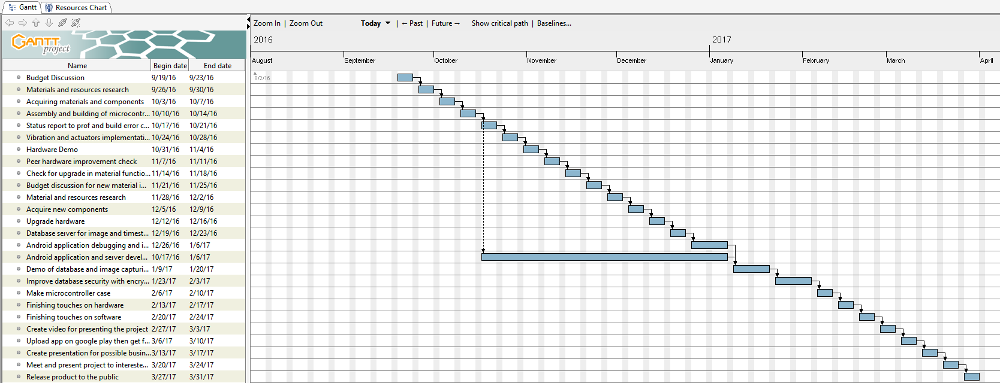
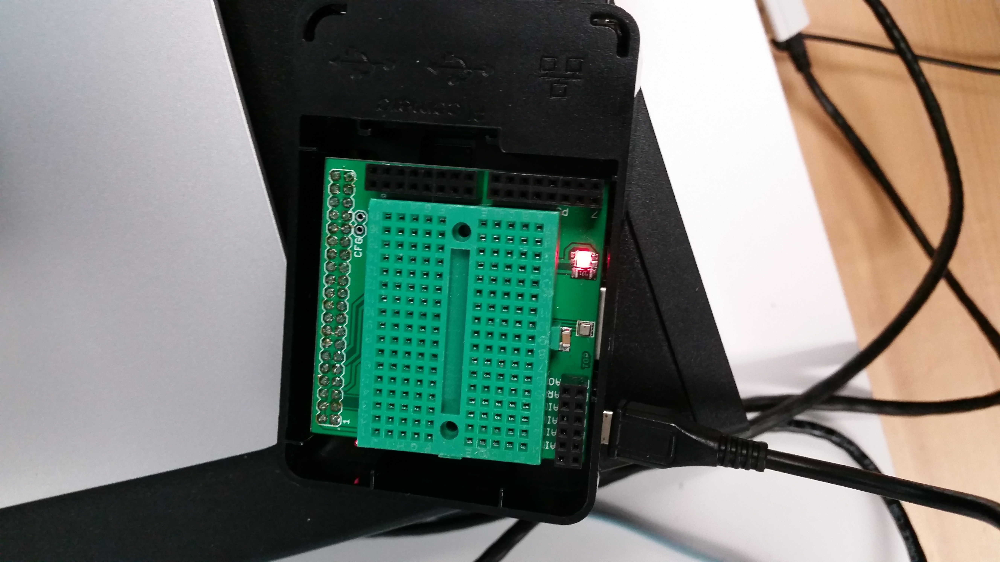

Project Update
October 10, 2016
Assembled raspberry pi and installation of its os. Camera module installation and testing on raspberry pi.
Current progress
Problems and Opportunities
Problem- vibration sensorsFinancial updates
Sensors,raspberry pi and camera module prices can be viewed in budget report. Every materials
used are in budget so far. Will probably need some metal sheets for testing the sensors to demo as a car door which will probably cost 10-30
dollars depending on the size of the material.
Budget Report (file currently on my humber drive)
GANTT Chart

Telematics
Members
Jabneel Cruz
Jerome Aganon
Jaewoong Kang
Raspberry Pi LED Green light
Raspberry Pi LED Red light